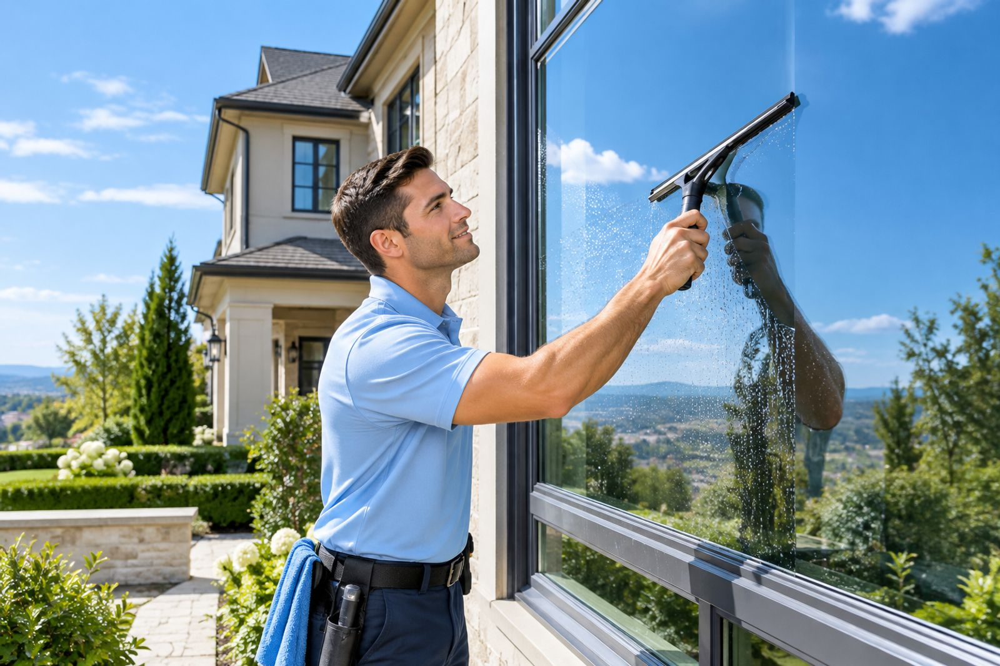
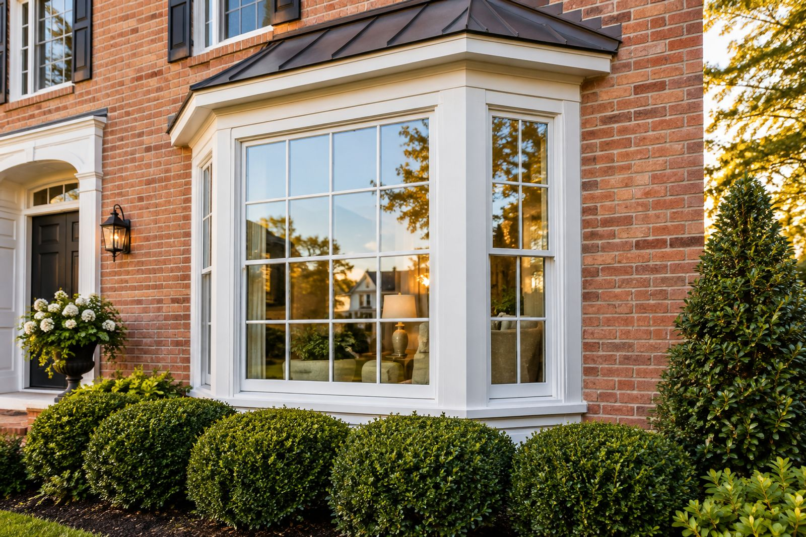
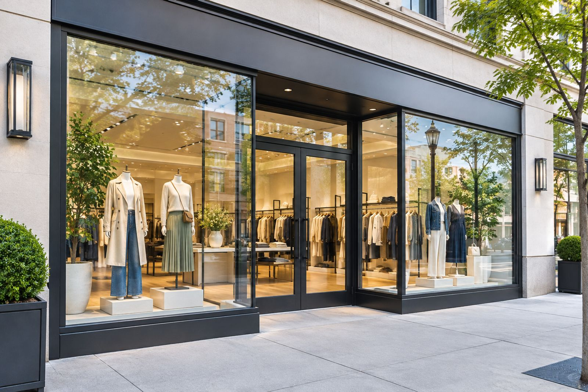
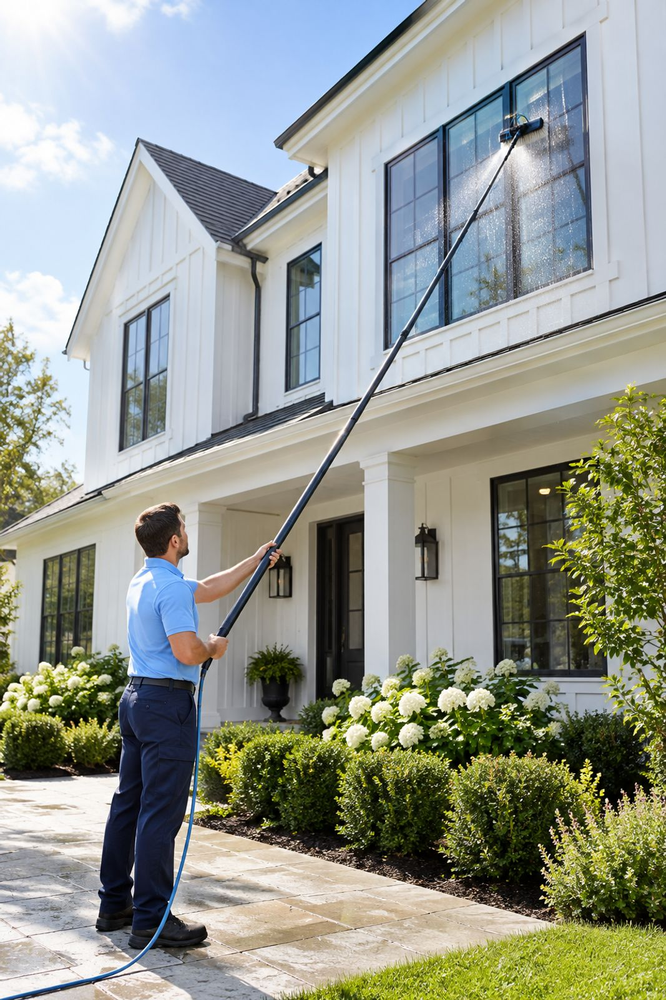
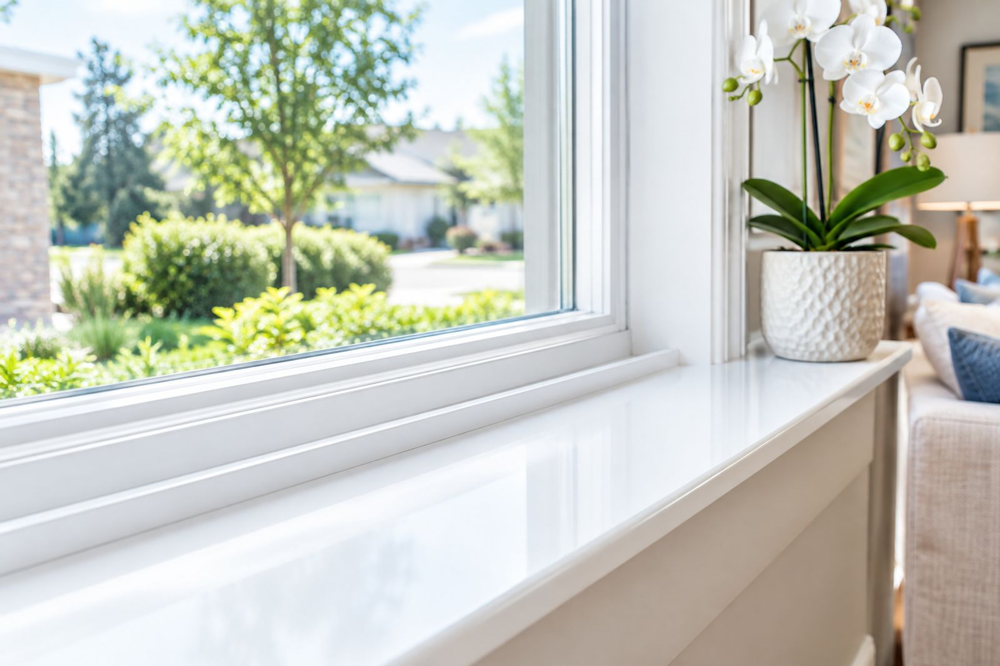
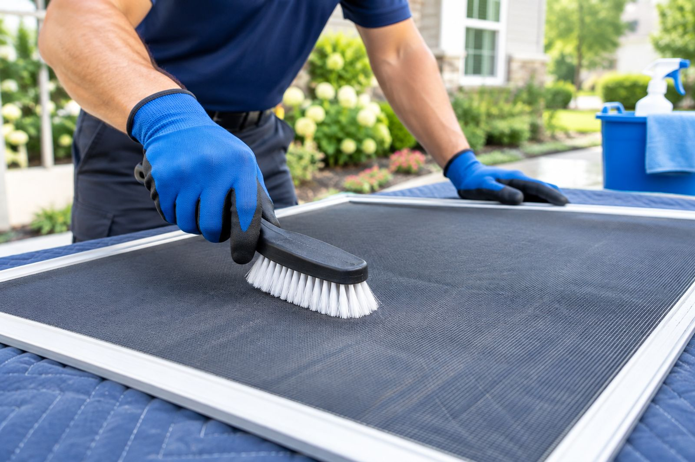
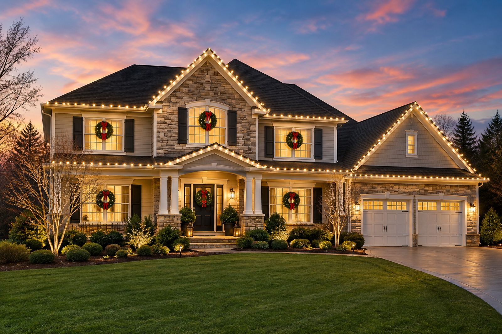

Services
Residential window cleaning inside and out, screen cleaning, sill and track detailing, storefront and office glass on a weekly or monthly route, and hard-water stain removal. Many locations also install holiday lighting in season.






